13.7米毫米波望远镜
2004-2005观测季节状态报告
( Status Report on the 13.7m Mm-Wave Telescope for
The 2004-2005 Observing Season )
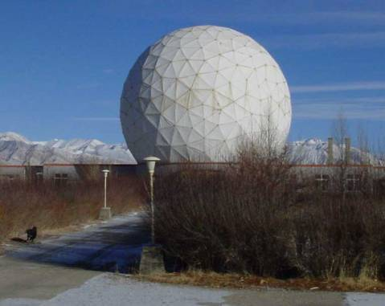
杨 戟
jiyang@mail.pmodlh.ac.cn
jiyang@mail.pmo.ac.cn
中国科学院紫金山天文台青海射电天文观测站
德令哈毫米波观测基地
2004年11月08日
一，望远镜系统概况及夏季维护与更新改造情况
在2004 年夏季（6 -9月）维护更新季节，基地对连续谱调制系统做了进一步的更新、对接收机波束进行了测量；与“毫米波-亚毫米波技术实验室”合作对超导SIS混频器电路进行了改进；在“南京中科天仪中心”的协助下对13.7米毫米波望远镜进行了天线机械系统的检修和重点维护、面板的调整。在9月15日前基地陆续完成了夏季的各项维护（检修、更新）计划项目。从9月16日开始，基地对望远镜进行了为期1个半月的“综合性能的天文测试”工作，包括对指向跟踪、系统稳定性、连续谱及谱线五点指向、调焦、方向图及天线效率测试、频谱仪定标、观测过程优化、天体谱线标准源的强度与视向速度、观测成图效率等的测试。以下简要报告维护、更新、测试等发面的主要工作和结果：
（1）、天线面板调整[1]。继续通过合同方式，由南京中科天仪中心主持对望远镜天线机械系统进行了维护检修。对天线主反射面的面板共进行了四轮测调。480个面板调整靶点全都达到了误差在3″以内，经照明加权后的主反射面面板误差为70 mm。望远镜最终效率还决定于该面板效率与波束传输、光学耦合、园堡框架的遮挡等效率因子的乘积。
（2）、天线机械系统检修调整[2]。今年与天仪中心订立合同，对天线的方位及俯仰轴的大齿轮进行了清洗加油，对传动低速箱与天线方位和俯仰轴大齿轮之间的齿隙及啮合面积进行了重点调整。这是望远镜安装以来第一次调整，调整工作进展顺利。调整以后，方位大齿轮与二号低速箱啮合面积超过80%，其余三个大齿轮的啮合面积超过90%，齿隙在0.13-0.18 mm范围，基本达到了出厂时的指标。对高速箱也进行了检查，更换了部分磨损的齿轮。检修调整结果显示，望远镜机械大齿轮没有重大磨损，今后只要正常维护，使用寿命应当在二十年以上。维护过程中还将天线传动大罩壳由以往的固定方式改装成可拆卸的方式，便于今后对大齿轮的保养和检修。
（3）、光学系统耦合测量[3]。为了使望远镜的光学系统的调整符合技术要求，望远镜的副镜与接收机之间的光学耦合是重要的一个环节。过去，由于缺乏接收机电轴的测量数据，通常将接收机的机械参考方向（光轴）作为与副镜进行调准对齐(alignment)的依据。由于实际机械加工和安装的误差，接收机的光轴与电轴之间通常不完全重合。这一因素制约了“接收机”与主-副面共同构成的“天线光轴”的调准对齐耦合。今年，基地自行设计和研制了三维波束测量系统，在实验室对接收机的场强方向图进行了高精度的测量，确定了电轴方向。根据测量结果，采用多激光束定位的方法完成了接收机与天线光轴的调准对齐工作。具体内容可参阅基地的技术报告[3]。
（4）、新建“连续谱调制接收系统”[4]。连续谱调制接收系统是望远镜进行“行星五点指向”测量、效率测量等工作所必须的设备。基地在2003年研制新的斩波轮调制系统的基础上，2004年夏季引入了数字型锁定放大器(Lock-in Amplifier)。斩波轮调制器与锁定放大器组合，共同构成了“连续谱调制接收系统”。锁定放大器将斩波轮的调制信号作为外部参考信号，对经过斩波轮调制以后的800 MHz中频信号进行解调和直流信号处理，得到望远镜的主波束(on-beam)与参考波束（off-beam，在AZ方向与主波束间距8￠ E ）两个方向的差值信号。新“连续谱调制接收系统”的优点有：（a）, 实验表明，运用波束调制，充分消除了毫米波段快速的大气变化对信号的影响，这样的系统在观测木星时可以获得S/N>30的五点指向数据，新系统的S /N性能远优于被替代的K-因子系统。经过系统更新后，新的连续谱调制系统使得AZ-EL方向的各个五点数据组的拟合精度提高；(b)，由于新系统灵敏度的提高，行星连续谱五点观测所需要取得足够数据点（用于指向模型拟合）的取值周期从原先的3-5天缩短到1-2天，并且不过于受天气条件的限制。（c）, 使用该系统可以对行星进行二维调制扫描，测量波束二维分布和望远镜效率。(d)，新的连续谱调制接收系统的建立为探测中小尺度（角径￡ 8￠）的毫米波连续谱源（例如致密HII区、类星体、行星等等）提高了灵敏度和稳定性，扩展了望远镜可以从事的观测课题。
（5），接收机稳定性提高。在以往的几个观测季节中，接收机在100 GHz以下的部分频率点存在增益稳定性恶化的现象，对这些频率点附近一些重要的分子谱线的观测带来一定的困难。在2004年夏季维护更新工作中，由毫米波技术实验室史生才研究员为主承担了优化接收机稳定性的工作。采用新的设计技术，完成了对SIS混频器电路的修改和调整，通过了对接收机的噪声指标和稳定性指标测试。由于此项工作的成功，使得目前的接收机在85-115 GHz整个波段都能提供良好的稳定性。具体测试结果见2.4节。
（6），望远镜指向的改善。由于新建的“连续谱调制接收系统”具备提高的S/N和稳定性，在望远镜综合性能测试阶段对指向进行了多轮测试，改善了指向模型拟合。指向数据主要来自南天的行星连续谱五点观测。借助于SIS超导接收机在100 GHz 以下波段性能的改善，我们通过86.243 GHz处的SiO脉泽(v=1，J=2-1)谱线对R Cas等北天的脉泽源采用“谱线五点方法”进行全程（full-track）观测，验证望远镜指向模型修正在北天的“适用性”。这也是望远镜历史上第一次具备了对北天的指向误差进行比较系统的观测验证的有效手段。
二，望远镜性能的简要说明
1，天线及表面精度
德令哈基地毫米波望远镜口径为13.7 m (45英尺) ，使用地平式机架。望远镜的光学系统是经典卡塞格林系统，接收机工作在卡焦上。经过面板调整以后的主反射面的表面精度为70 mm [1]。
2，望远镜指向
在新的“连续谱调制接收系统”完成以后，可以用该系统对行星（火星、木星和土星）进行“五点指向观测”。用1-2 天时间，取得150-300组观测数据以后，用本年度修改（增加了大气吸收项）的指向模型对这些数据进行拟合。图2.2.1示例的是一组行星观测的数据点分布，图2.2.2示例的是该组数据经过指向模型拟合以后计算的残差分布，代表望远镜的指向误差。在综合测试过程中，“指向观测à模型拟合à修改验证”的过程要进行多轮。拟合得到的新模型在与以往模型比对评估的基础上，通过新的一轮观测加以验证，并进一步积累观测数据，增加后继拟合的数据精度。
除了火星及木星以外，土星的数据S/N也超过以往用连续谱总功率模式进行五点观测的情形，增加了每天的数据量，同时也增加天体运行轨迹在天空的覆盖区域，提高拟合精度。
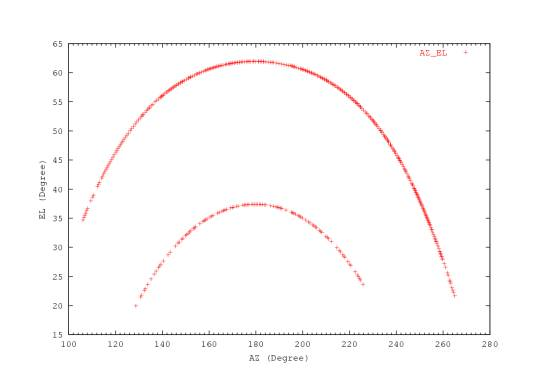
图2.2.1 行星五点观测的有效数据点在天空中的分布，俯仰高的是木星轨迹, 俯仰低的是火星的轨迹。数据取自2003年10月5日。本图取自报告[4]
在综合性能测试阶段，望远镜对南天行星进行了充分的五点指向观测。结果显示，目前望远镜的指向误差(rms)为9.5″。从测试结果得知，望远镜在低俯仰方向(EL￡35°)指向有偏大的趋势，特提醒观测者，尤其是观测银河中心附近方向的天体目标的研究人员注意。
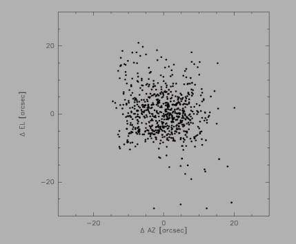
2.2.2 五点强度拟合后得到的方位残差和俯仰残差的分布。指向误差分布椭圆的长半轴为5.96″，短半轴为7.40″，方向角为28.83o。 数据截止到2004.10.28。本图取自报告[4]。
在南天行星五点指向观测与验正的基础上，我们对一批北天的SiO 脉泽源进行了强度巡查。对强源R Cas，我们用新建的“谱线五点观测程序”重点进行了全程观测验证。结果表明，指向模型在北天的精度与南天可比，为指向模型的全天适用性提供了验证。在望远镜运行阶段，指向状况还可以通过观测CO谱线点源（例如IRC+10216等晚期恒星）或者具有明显局部空间分布特征的部分CO面源（如S140等）来不定期地加以验证。
作为常规测试项目，在观测季节内，每个月还要进行一轮指向测试与验证，以便及时调整大气折射项与环境参数的对应关系。
3，望远镜的跟踪
控制系统采用位置反馈的PID 控制量计算方法。 经过大量测试，获得了较好的控制量参数组合。测试表明，对绝大部分天区，天线的跟踪误差在1-3"左右，完全符合观测要求（根据望远镜的波束大小，观测时望远镜的跟踪误差允许范围也被限制在7"以内，以保证足够的精度）。图2.3.1和图2.3.2为天线在AZ和EL两个方向的跟踪误差测试结果：
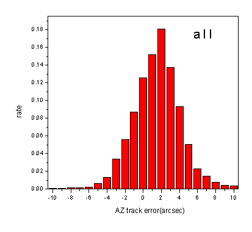
图2.3.1 方位的跟踪误差统计分布图。分布给出的方位跟踪统计误差rms=3.1″。数据取自参考资料[5]。
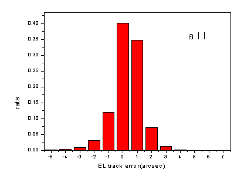
图2.3.2 俯仰的跟踪误差统计分布图。分布给出的俯仰跟踪统计误差rms=1.02。数据取自参考资料[7]。
4，望远镜的效率参数（波束宽度、口面效率、波束效率）和温标
对于主要从事星际分子云等面源观测的望远镜而言，波束效率是一个重要的效率指标。测量望远镜主波束效率最恰当的方式是寻找一个与望远镜波束尺寸一致的天体来进行。但是，实际中并没有这样的天体（或人造）目标存在。因此，测量望远镜主波束效率是通过分别对月面、对行星等目标的测量来进行。对月面的二维扫描，在考虑月相的修正以后，用于测量“月面效率”，hMOON。该效率是用来衡量望远镜对于“宽面源”的波束效率（见图2.4.1）。
对木星、金星等进行二维扫描观测，测量望远镜的波束分布、口面效率和波束效率。图2.4.1显示的是望远镜波束的分布（方向图）。
月面效率比采用行星测量得到的主波束效率要高，因为前者包含了主波束以外的“前向 (forward)”旁瓣成份。望远镜聚焦越精确，用行星测量得到的“主波束效率”越接近“月面效率”。在实际观测中，目标天体（分子云）的尺度通常大于望远镜的波束宽度。这时，望远镜的波束效率相对地接近月面效率，相关的说明见2.7节。
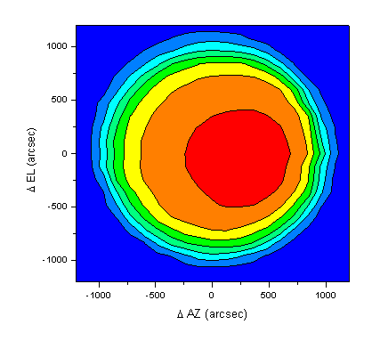
图2.4.1 对月面二维扫描得到的强度分布。测量时接收机的本振频率设置为105 GHz，扫描42￠′42￠, 步长2￠′2￠。观测时月相为10°，月面亮温度329 K。数据取自2004年9月27日。
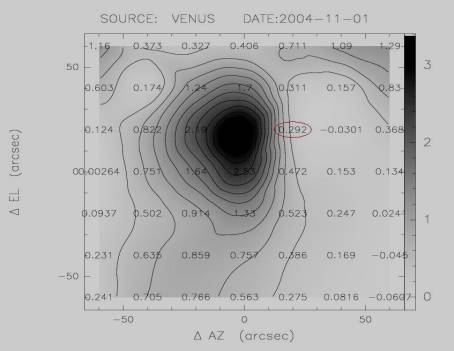
图2.4.2 对金星二维扫描的得到的强度分布，天线方向图是该图与当日金星（的尺寸）去卷积。数据扫描范围为7￠′7￠, 步长间隔20″，拟合的主波束宽度为50”。从图中可以看到，当前望远镜的主波束基本对称，但是，由于副镜的重力弯沉等原因，在主波束上方还存在一定的低电平旁瓣（象差）。数据取自2004年11月1日。
观测结果表明，望远镜波束宽度HPBW=50"，月面效率为0.77。由于近轴旁瓣、彗差等成份的存在，主波束效率应当小于月面效率，详细请见2.7节。
5，接收机的参数（频率工作范围、噪声温度、稳定性）
13.7米望远镜目前使用一台3 mm波段的超导SIS接收机。按照标准的波段设置要求，该波段的接收机工作频率范围应当在85-115 GHz。 使用中的接收机本观测季节在f(LO)= 85-115 GHz波段范围内接收机的噪声温度Trx的实测值为70-128 K(DSB)，而包含了地球大气噪声辐射贡献在内的“系统温度”, Tsys，的测量值分布在图2.5.1中显示。这些系统温度的数据有助于观测者估计项目所需要的观测积分时间和灵敏度。
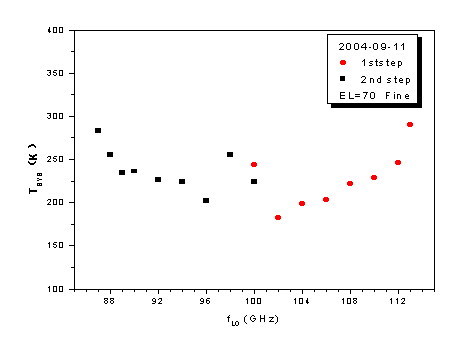
图2.5.1. 系统温度随接收机本振频率的分布。横坐标是接收机的工作频率， 纵坐标是双边带工作方式下测量的系统温度, Tsys[DSB] (K)， 它包含了接收机、天线与光学系统、圆顶和蒙皮、以及地球大气的贡献。86—100 GHz区间混频器工作点调整在第2量子台阶上。本图中的数据测量时间是2004年9月（参考资料[8]）。本图的系统温度随工作频率的分布可用估计观测的积分时间。在冬季的相当时间范围内，由于气温普遍低于测试时间（9月份），因此，预计的系统温度值应当略低于本图的分布。
经过2004年夏季技术更新后，消除了前一个观测季节接收机在部分低频端出现的不稳定现象。因此，本观测季节，望远镜可以从事从85-115 GHz整个波段内的观测。 多次重复测量结果表明，单位小时内的系统相对稳定性DG/G￡ 5′10-3。图2.5.2显示了接收机在工作波段内的相对稳定性的典型测量结果。
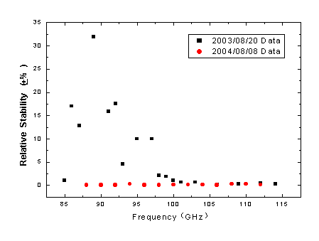
图2.5.2. 接收机中频总功率输出的相对稳定性随前端本振频率的分布。横坐标表示本振的工作频率，纵坐标表示每单位小时的总功率的相对起伏，用以度量接收机增益的相对稳定性。测量时间是2004年8月8日。为了比较，上图中也将2003年的相对稳定性用“黑色方块”表示。从图上可以看到，与上个观测季节相比，本季节在整个85-115 GHz频段内的接收机稳定性（红色数据点）都达到￡ 5′10-3/hr的水平。
6，后端频谱仪的主要技术参数（带宽、信道数、分辨率、稳定性）
从2002-2003 观测季节开始，基地使用“3毫米波段多谱线系统”作为主要的接收后端。该系统是由科学院“九？五重大项目”支持并由毫米波技术实验室主持研制的。“3毫米波段多谱线系统”主要由宽带4路中频和3个AOS后端频谱仪组成，它同时可以接收在3毫米波段对天体物理重要的12CO (J=1-0)、13CO(J=1-0)、C18O(J=1-0)等3条星际分子谱线。多谱线系统的中频信号的中心频率为2.64 GHz、带宽为800 MHz。当本振频率设置在F(LO)=112.6 GHz时，同一个SIS超导接收机以上/下边带折叠方式同时接收12CO (J=1-0)、13CO(J=1-0)、C18O(J=1-0)等3条谱线，在第一本振频率跟踪的基础上，通过中频系统加以二次视向速度修正，多谱勒频率跟踪精度达到50 kHz（等价于0.1 km/s）。谱线中频信号处理由原来的1路更新为4路。对其中的3路，分别用1个带宽为145 MHz和2个带宽为43 MHz的3个新AOS频谱仪加以接收，使系统同时获得3×1024通道的谱线信息，中频的第4路作为总功率接收。经过测试，包含实际大气变化在内的系统整体Allen方差时标> 60秒。 数据采集系统采用了FPGA编程的AOS实时控制和数据采集系统，提供Quicklook界面和工业标准的IE488接口，操作使用方便。该系统在实现上、下边带3条谱线同时接收的基础上，也保留了观测单条谱线的功能，并且对频谱仪的选择提供了灵活性。
表2.6.1列出了这3个AOS后端的基本参数。望远镜实际运行中，仪器随工作环境的微小变化（例如温度变化）会导致表2.6.1中的参数也发生微小变化。观测基地要经常性地进行频率定标测试。在每次常规测试以后，最新的准确数值将在观测数据FITS文件中及时更新，以便保证数据中反映的参数是最新的。
表2.6.1 望远镜频谱后端AOS的基本参数
|
后端名称 |
带宽 |
通道数 |
通道
频率分辨率 |
|
AOS-I（13CO）
（110.201353 GHz） |
42.9 MHz |
1024 |
78.7 KHz |
|
AOS-II（C18O）
(109.782183 GHz) |
43.3 MHz |
1024 |
75.7 KHz |
|
AOS-III（12CO）
(115.271204 GHz) |
145.4 MHz |
1024 |
209.0 KHz |
基于3 条谱线的同时接收，“多谱线系统”使信号接收速率直接了提高3倍，显著加强了望远镜的观测能力。利用“同时观测”的原理，多谱线系统在提高接收机稳定性的基础上，在很大程度上消除了毫米波段大气快速变化所带来的对信号强度的影响，提高了测量精度。与以往的系统相比，“多谱线同时观测”也提供了对观测流程的优化，使望远镜的成图观测效率提高2-3倍，其效果同样也增加望远镜的数据产出率。结合多谱线系统，望远镜的另一个显著的改善是引入实时斩波轮校准方法，使原始谱线的基线变得平整，这些谱线通常经过线性基线拟合以后就能够获得精确的谱线信息，使定标精度优于10%, 并使数据有效率提高1-2倍。图2.6.1示意的是三条谱线同时观测得到的原始谱线数据。
根据星际分子谱线的特定频率位置，观测者也可以在接收机工作波段的任何别的本振频率下选择这3个后端中的1至3个频谱仪来工作，并且可以根据大气变化情况和接收机工作状态选择最佳的本振工作频率和边带。 观测课题明确了观测频率的需求以后，可以向基地为该开放观测研究项目指定的观测助手咨询仪器设置和选项的具体方案。
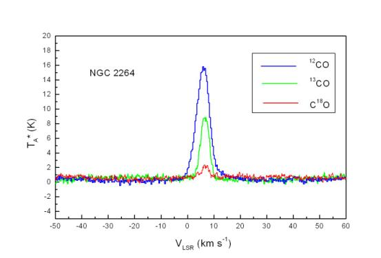
图2.6.1 “3毫米波段多谱线系统”一次（例）观测直接输出的NGC2264的12CO、13CO、 C18O(J=1-0)三条原始谱数据。横坐标是视向速度，纵坐标是天线温度。蓝线代表12CO谱，绿色线是13CO谱，红色线是C18O谱。观测的“在源积分时间”为60 sec，EL=43°，系统温度Tsys=248 K。数据未经过基线拟合, 从该图中可以看到，噪声水平与系统温度相对应，谱线的基线足够平整。
7，谱线数据定标、俯仰效率关系、以及数据精度的检验
望远镜作为一个整体，它对天体谱线标准源进行观测的数据精度通常用来反映天文观测能够达到的实际测量精度。在运行过程中，我们也用该精度作为对整个望远镜观测系统仪器性能、工作状态、观测方法、以及数据归算处理等全过程的监测。
在分子谱线观测中，本望远镜采用标准的斩波轮校准方法(Ulich & Haas 1976; ApJS, 30, 247及随后的文献)，给出的温标是改正了大气吸收后的“天线温度”，也就是文献上的TA*。对于星际分子云展源，通常这个温标要进一步改正望远镜的主波束效率hmb，得到与同类望远镜可比的“观测辐射温度”，TR*。这个温标代表望远镜的理想主波束与源空间亮温度分布的卷积。在我们的原始数据中不进行波束效率改正。观测者在进行银河系分子云等面源观测中，得到源的天线温度后，需根据望远镜响应观测季节所公布的波束效率，按照 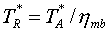的关系计算TR*。注意，这里假定了hmb不随俯仰变化。
在“综合性能的天文测试”阶段，我们进一步证实了望远镜光学系统随俯仰高度变化显著。由于13.7米望远镜天线的设计是基与20世纪70年代的技术，该望远镜的一个特点（或不足）是副镜尺寸大，并且沉重。这种结构导致了在EL方向副镜支撑随俯仰的重力弯沉变化很显著，带来一系列负面效应，包括使得天线与接收机光学系统的耦合在不同的俯仰高度发生变化，使波束发生不对称（象差），使效率发生变化，使指向模型复杂化等等。图2.7.1给出了 “俯仰效率关系”的一个测量例。
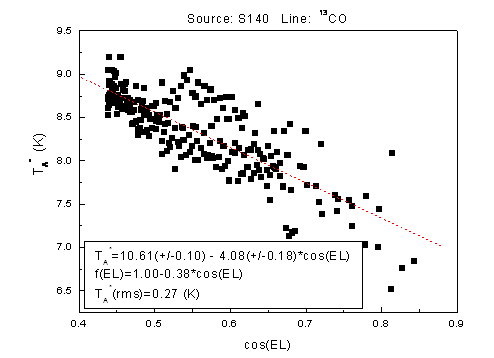
图2.7.1 谱线标准源S140方向的13CO峰值天线温度随俯仰的变化关系。由测量数据拟合出望远镜的“俯仰效率关系”，f(EL) =1.00-0.38′cos(EL)。图中使用了237组谱线数据。数据取自截止2004年11月4日的观测结果，资料取自[9]。
从图2.7.1可以看到，由于天线面板、副镜等的重力形变与光学耦合变化，观测得到的天线温度随俯仰有一定的依赖关系。在校正了这一变化以后，S140源的13CO峰值强度的数据起伏（rms, 代表了最终可以得到的数据精度）降低到0.27 K，天线温度测量的相对精度达到2.5%。对其它谱线标准源的测量也表明，“俯仰效率关系”f(EL)以及相对精度与S140的观测结果基本接近。
基地建议观测者在进行课题观测的过程中适当选取待测目标源附近的谱线标准源定期（每1-2小时）地加以观测，或者利用待测源的某一特定位置（例如，中心点）作为相对标准，观测过程中在不同EL方向多次加以观测，建立对应的俯仰效率关系f(EL)。在此基础上，根据以下关系进行效率修正：
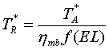
其中hmb是天顶方向的望远镜主波束效率。下表是根据毫米波谱线标准源观测得到的天顶方向的主波束效率的值：
表2.7.1
|
SOURCE |
TR*(K) by NRAO |
TA* (K) @ Delingha (EL=90O) |
hmb (EL=90o) |
|
S140 |
26[1] |
18.54 |
0.71 |
|
ORIONA |
75[2] |
60.26 |
0.80 |
|
l134 |
7[2] |
5.66 |
0.81 |
从表统计可以得知，根据谱线标准源的温标TR*，得到本望远镜天顶方向的主波束效率的统计值为0.77±0.06。这一结果与月面测量得到的“宽面源”主波束效率相一致。
我们在继续测量波束效率变化规律的同时，建议目前的观测主要集中在EL=35o-75o 的范围内进行观测。基地今后将继续进行副镜重力弯沉效应的测试和调焦实验，并将及时公布有关实验结果和技术报告，供使用人员查阅。在实验的基础上，今后将对副镜实行主动式控制，实时补偿副镜的重力弯沉所带来的光学耦合变化，最大限度地消除增益的EL依赖关系。
8，观测模式
· 在接收机工作频率范围内，望远镜以双边带下的位置开关模式进行谱线观测，单点观测或者成图观测。
· 可以使用“多谱线系统”同时观测CO及其同位素的谱线。
· 谱线观测采用标准的斩波轮方法定标。
· 可以进行3 mm波段大气不透明度的测量。
· 可进行波束调制方式下的3 mm波段连续谱单点和成图观测。
9，成图(Mapping)的时间效率
成图观测(Mapping) 是常用的面源观测方式，望远镜通过单一波束在空间的逐点扫描来覆盖一定的天区范围，获得三维(X-Y-Velocity)图象。除了系统温度决定的灵敏度或积分时间以外，观测过程中的天线跟踪移动、斩波轮开关、数据I/O等操作也导致一部分时间损耗。经过测试，目前Mapping模式下该时间效率因子为 1.5。观测者在课题所需观测时间的计算中应将目标-参考源的时间总和乘以该因子，作为估算项目总时间需求的依据。
10，资料格式
更新后的控制系统输出数据为国际通用的标准FITS格式。头部信息中的关键字符合GILDAS/CLASS处理软件[注]的需要。用户可以使用GILDAS/CLASS等一些通用的射电谱线数据处理软件来进行处理。 基地也提供将以往13.7米望远镜使用的DRAWSPEC格式转换为FITS格式的软件，通过基地网页下载。
[注]：GILDAS/CLASS是由法国Grenoble天文台与IRAM合作开发的射电天文数据处理软件。
三，开放观测课题的申请和日程安排
2004-2005观测季节13.7米毫米波望远镜的对外开放观测服务从2003年11月5日起开始。该观测季节预计将在2005年6月结束。观测季节内望远镜24小时连续运行。2005年春节按照国家法定休假时间表望远镜暂停运行。
德令哈基地13.7米毫米波望远镜最新状态和详细技术报告将及时公布在基地网页：http://www.pmodlh.ac.cn上。
德令哈毫米波观测基地热情邀请国内外专家使用该望远镜从事天文和相关科学的观测研究。13.7望远镜常年接受观测课题申请。所有观测申请均由proposal@mail.pmodlh.ac.cn加以受理。观测申请的格式文本可以从基地网页下载。申请的观测课题或者时间要求在出现竞争的情况下将完全经由“毫米波评议会”的专家根据申请项目的科学意义和项目可行性进行打分评议，确定优先级。毫米波评议会的专家目前由南京大学、北京大学、北京师范大学、上海天文台、以及国家天文台的同行专家组成，今后还将聘请一些海外同行专家担任“毫米波评议会”专家。
2003-2004观测季节，基地共完成了21项开放课题的观测，包括俄罗斯、台湾等地区的课题。
2004-2005观测季节的基本时间安排如下：
2004.11-12 使用“3mm波段多谱线”系统的课题；
2005.01-03 使用“3mm波段多谱线”系统的课题；
2005.03-06 使用其它频率和观测模式的课题。
德令哈观测基地根据上述整体时间安排为对所接受的观测课题申请安排具体的观测时间并在项目观测的前2-4 周通知项目PI。对每一项接受课题，基地将以正常的仪器状态积极协助天文学家完成观测。基地为每一个观测课题配备天文观测助手。通知观测课题的同时也为每个观测项目指派天文观测助手。部分观测课题特别需要时，基地也接受委托观测。尽管如此，基地还是强烈建议：观测者（尤其是还不足够熟悉毫米波望远镜观测的研究人员及学生）能来基地参加观测，在了解毫米波射电天文观测的一般过程的同时，也有机会熟悉13.7米毫米望远镜的特点，把握观测数据的质量。
四，近几个观测季节内望远镜从事的观测课题举例
1，银河系分子云物理结构的探测；
2，年轻星的高速气体外流和动力学；
3，星际化学；
4，银河系恒星形成区内分子气体的分布；
5，银河系动力学；
6，超新星遗迹与星际介质相互作用、宇宙射线源；
7，恒星演化和晚型恒星的分子气体观测；
8，太阳系天体的分子谱线观测；
9，月球的毫米波辐射性质的观测研究；
10，地球大气的毫米波电波传播和辐射物理性质的观测研究；
五，使用望远镜进行观测
1，观测准备
· 观测者从科学目标出发，准备观测源的基本信息，包括目标源的坐标、速度、尺度、参考背景(reference)的坐标、所需要的探测极限和积分时间估计等。由于毫米波段大气辐射在EL方向的梯度显著，这种梯度制约了谱线观测的基线平整度。因此我们特别提醒，参考背景坐标的选取应尽量限制在距离目标源1°的范围内，以保证谱线基线有足够的平整度。
· 从2002-2003观测季节开始，基地提供成图观测的Tck/Tk制表程序dtg.tcl。观测者可在基地相关网页下载该程序来制表。使用该制表程序有困难者也可以到基地以后再行制表。
· 基地指派的天文观测助手将协助观测者进行必要的观测准备，包括介绍设备情况、提供仪器选项的咨询、协助制表、协助观测日程和步骤的制订、协助观测和数据处理、提供数据备份、与用户保持观测后的必要联系等。
2，观测
望远镜值班操作人员负责进行望远镜和相关仪器的操作，根据要求进行观测。他们根据工作日程进行观测，及时向课题观测研究人员反映仪器的状态，直到完成观测。
在观测过程中，项目观测研究人员及基地指派的观测助手对获得的数据内容和质量进行核查，及时对操作提出要求。必要时，值班操作人员可根据仪器状况建议观测者调整观测内容。
基地备有《望远镜观测手册》，以方便来基地的课题观测研究人员了解和核实操作员的操作内容。基地今后将不定期地举办讲习班和观测操作培训。经过观测操作培训的外单位工作人员和研究生有可能获得授权在他们的观测项目执行过程中操作望远镜。
3，数据处理、数据备份
基地为观测研究人员准备了优质、可靠、实用方便的数据处理操作平台，以SUN BLADE 2000、SUN ULTRA-10以及PC LINUX工作站为硬件平台， GILDAS/CLASS作为基地处理毫米波谱线数据的标准软件。观测数据可在基地即时处理。基地指派的天文观测助手将协助观测者熟悉数据处理的操作。
基地指派的天文观测助手将负责为观测者备份光盘数据。观测者也可以通过基地网络将数据传送回自己的研究所。基地将为所有观测项目备份其原始数据。根据国际惯例，课题观测的所有数据将由课题申请者独占使用一年后成为开放共享数据。跨年度的长期项目在观测结束日起满一整年以后成为开放共享数据。
4，交通与生活服务
基地将为所有观测人员做好迎送接待、食宿、交通、网络通讯、应急供氧等支撑工作。经过2003 年夏季对办公及招待所的装修，基地的工作和住宿环境得到了明显改善。前来基地从事观测课题研究的人员食宿交通等费用自理。由于地处西部，交通不便,我们推荐前来基地观测的研究人员事先计划安排好车（机）票。目前，当地铁路部门尚未将由德令哈往返附近中转城市的车票纳入全国铁路车票预订网络，车票在当地订购。为此，在基地网页上我们公布有基地在西宁的接待号码，该接待处协助购买从西宁至德令哈的车票。从兰州中转时，也可以根据网页上提供的电话号码与基地协议单位联系订票。从基地返回到上述两个中转城市的车票均由基地帮助解决。
基地负责德令哈市当地的接送站。到达基地前，请与基地办公室马俊梅女士联系接站时间和具体要求，电话(0977)8224969。
德令哈基地地处青藏高原，干燥缺氧，冬季气候寒冷。基地提醒前来工作的天文学家携带足够的御寒衣物，做好充分的适应准备。
六，意见建议、或进一步的联系咨询
本报告涉及的更新改造项目和综合性能的天文测试内容是德令哈毫米波观测基地全体工作人员及其与毫米波-亚毫米波技术实验室、南京中科天仪中心、恒星形成团组等单位的技术人员和天文学研究人员共同努力完成的。需要了解基地望远镜更多内容、提出意见（包括对本报告的质疑）或建议时，请与基地联系：jiyang@mail.pmodlh.ac.cn；电话：(0977)8224972，联系人杨戟研究员。对本报告有关内容的质询或批评也请发给上述地址。观测项目实施以后，欢迎研究人员对观测中的天文和技术问题以及各种观测服务工作出现的问题等提出意见和建议。在基地网页上也公布有基地全部工作人员的联系电话和Email地址。
七、参考资料和测试报告
[1], 邓祺源、唐翌华（南京中科天仪中心）；李阳、孙继先、赵霖、段文英、马奎（德令哈毫米波观测基地），2004.7.28，《13.7米天线主副面调测报告》
[2], 李阳、孙继先，2004.9.2，《望远镜方位俯仰大齿轮的维护调整报告》, 德令哈毫米波观测基地
[3], 左营喜、杨戟、吴洁青、张旭国、赵霖、辛海琴、马奎、杜福君、姚维亭，2004.09.《接收机波束测量系统资料手册》，德令哈毫米波观测基地
[4]，吴洁青、左营喜、杨戟、张旭国，2004.11.4，《连续谱后端及调制接收设备更新技术报告》
[5]， 观测研究组，2004.10.24、2004.11.2，《指向观测报告》，德令哈毫米波观测基地
[6]，孙继先、李阳，2004.9.13，《跟踪误差测试结果》，德令哈毫米波观测基地
[7]，观测研究组，2004.10.1，《方向图扫描和效率测试：10月1日的扫描结果》，德令哈毫米波观测基地
[8], 左营喜、吴洁青、马俊梅、张旭国， 2004.9.12, 《接收机测试通报》, 德令哈毫米波观测基地
[9], 观测研究组，2004.10.30，《S140和ORIONA中心点全天观测结果》，德令哈毫米波观测基地；《用标准源归算望远镜的主波束效率》， 2004.11.10
[注]：以上报告在基地内部网中公布，供查阅，部分报告将有更新版本。